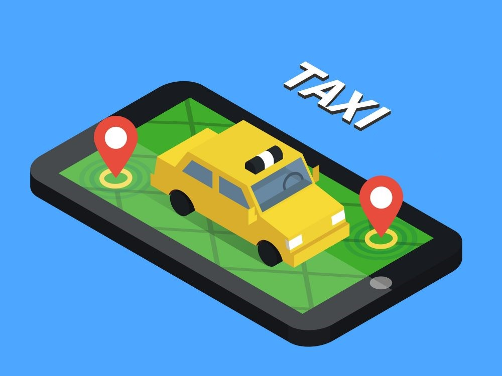

Welcome to PD Server Taxi Boking System
At PD Server Taxi Boking System,
we strive to redefine your transportation experience by providing a seamless and efficient platform for booking taxis online. With a commitment to convenience, safety, and reliability, we aim to be your go-to solution for all your transportation needs.
Our Mission
Our mission is to simplify your journey from point A to point B. Whether you're heading to work, catching a flight, or exploring the city, PD Server Taxi Boking System is here to make your travel experience hassle-free and enjoyable.
Why Choose PD Server Taxi Boking System ?
1. User-Friendly Platform: Our online booking system is designed with you in mind. It's easy to use, ensuring that you can book a taxi with just a few clicks.
2. 24/7 Availability: We understand that your travel needs don't always fit into a 9-to-5 schedule. That's why our services are available round the clock, every day of the week.
3. Safety First: Your safety is our priority. We partner with licensed and experienced drivers to ensure that you reach your destination securely.
4. Transparent Pricing: No hidden fees or surprises. Our transparent pricing policy ensures that you know the cost upfront, allowing you to plan your budget accordingly.
5. Reliable Service: Whether you're looking for a ride now or scheduling one for later, you can rely on PD Server Taxi Boking System to be there when you need us.
How It Works
1. Book Your Ride: Simply enter your pickup and drop-off locations, select the type of vehicle you need, and choose a convenient time for your journey.
2. Track Your Ride: Stay in the loop with real-time tracking. Know exactly when your taxi will arrive and track your journey for added peace of mind.
3. Secure Payments: Pay for your ride seamlessly through our secure online payment system. We accept various payment methods for your convenience.
4. Rate Your Experience: Your feedback matters. Rate your driver and share your experience to help us maintain the highest standards of service.

Join Us on the Journey
Experience the future of transportation with PD Server Taxi Boking System. Join us on this journey towards a more connected, convenient, and efficient way to travel. Wherever you're going, we're here to take you there.
Thank you for choosing
'PD Server Taxi Boking System'